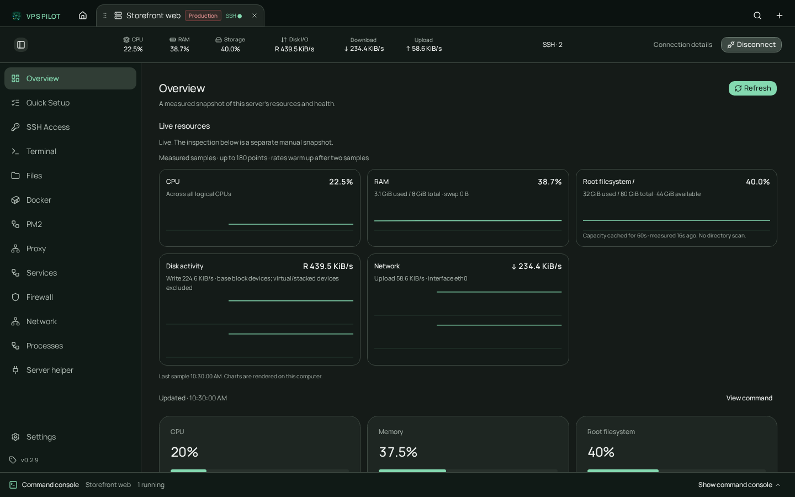
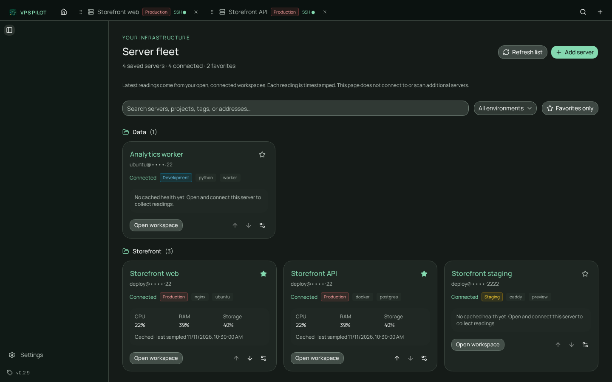
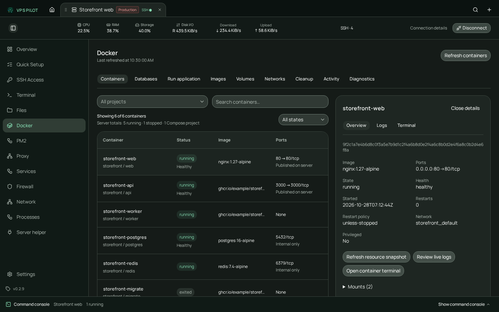
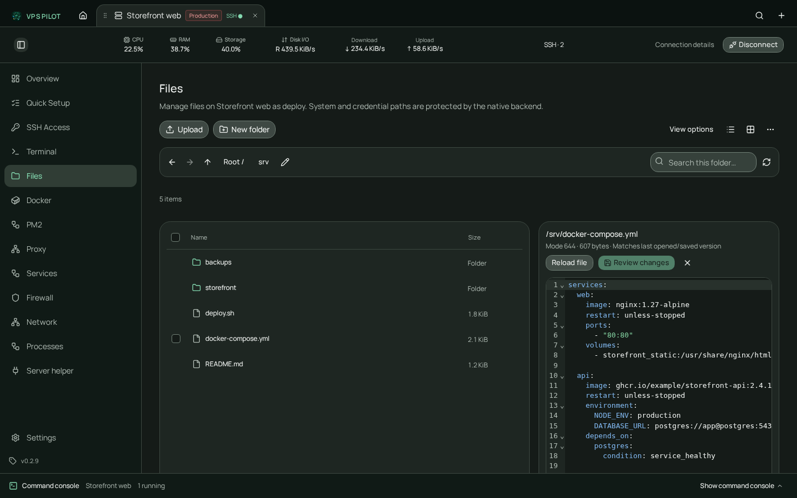
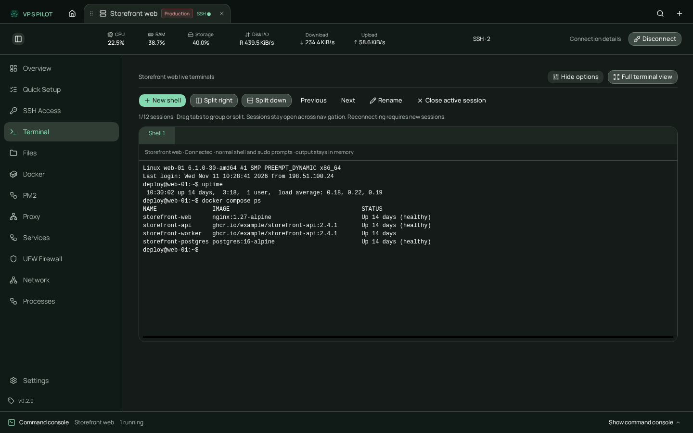

A place for every server.
Organize your fleet, verify SSH host keys and open several servers at once. Each keeps its own terminals, files and monitoring.
SSH terminals, remote files, Docker and PM2. A single workspace for the servers you manage, with their sessions and activity kept separate.
Linux, macOS & Windows · Connects directly over SSH · No VPS Pilot account

Organize your fleet, verify SSH host keys and open several servers at once. Each keeps its own terminals, files and monitoring.
Split terminals. Edit files over SFTP. Inspect Docker containers, run PM2 commands and manage proxy configurations.
Review changes before applying them. Follow command output, step results and errors without leaving the app.




Loading published release…
The desktop platform is listed above; VPS Pilot connects to Linux servers. All releases & checksums ↗